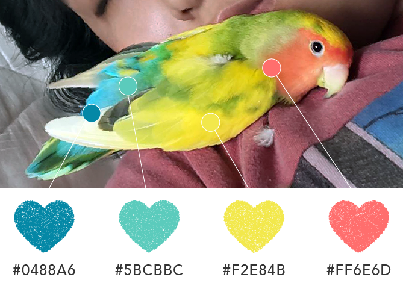

Kalihi Pet Center Website Redesign
ART 249–Interface Design II
For this project, I chose to redesign Kalihi Pet Center’s website. My goal was to add strengthen Kalihi Pet Center’s online presence, add e-commerce functionalities for customers, and create a “face” for Kalihi Pet Center.
As a customer of the shop, I wished to see the business represented more meaningfully that how it currently is online. Kalihi Pet Center is my go-to local pet store which I prefer over national pet retailers. The staff are always polite, the shelves are always stocked with the most diverse items I’ve seen on island, and the animals are clearly cared for. My goal was represent my friendly local pet store with heart and add functionality.
Services: UI / UX Design, Frontend Web Development, Branding, Copywriting, 2D
Animation
Skills: Adobe XD, Illustrator, Photoshop, Aftereffects; HTML / SCSS / JS
Conceptual Planning
Sitemap
My SiteMap consisted of “heart pages” that gives KPC room to express itself and functional pages for customers to browse and shop.
Wireframes
I did three different home screen wireframes that spotlit different functions of the multi-page site. Key features I felt should be on the homepage was a panel of icons leading directly to product pages, a sign-up/login call to action, and a link leading to pets for adoption. I then wireframed the rest of the site’s secondary pages.
The Design
A Genial Type Combo
Aesthet Nova
A Playful Glyphic Serif
Avenir
with a welcoming geometric sans-serif
Aesthet Nova is a display type family. It features rounded serifs, ball terminals and soft corners. The family is of 5 weights and over 680 characters. I chose this font because it has the somewhat nostalgic and familiar nature of a long-time friend.
Avenir is a geometric sans-serif typeface designed by Adrian Frutiger. Unlike Futura, I find Avenir’s geometry quieter and welcome-ly. For web use, I substituted Avenir with Gibson.
A Color Palette Inspired by a Feathered Friend
My pet lovebird Mushu was a customer of Kalihi Pet Center. Her toys, food, wing and nail trimming, and treats all came from Kalihi Pet Center. The color of her feathers are unlike most lovebirds I know of, with combinations of warm and cool colors that are bright and happy.
The Friendly Faces of Kalihi Pet Center
Rastered looking animations were my key to creating a welcoming and friendly website. These pals were originally illustrated in Photoshop and came to life via Illustrator and AfterEffects. Roughen Edges, Turbulent Displace, and Luma Inverted Mattes are responsible for maintaining the mastered quality to the animations. Using these tools however, meant using formats outside of CSS animation and Bodymovin by Lottie.